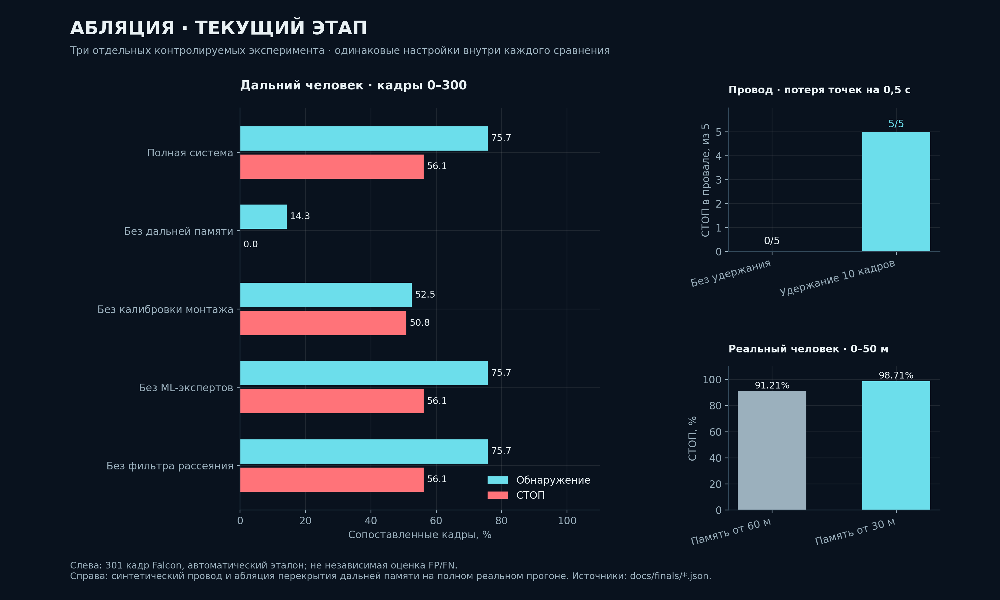
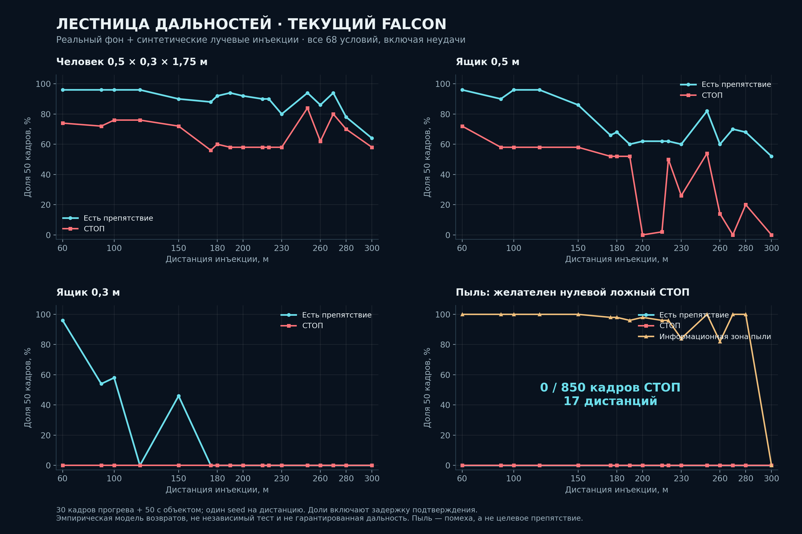
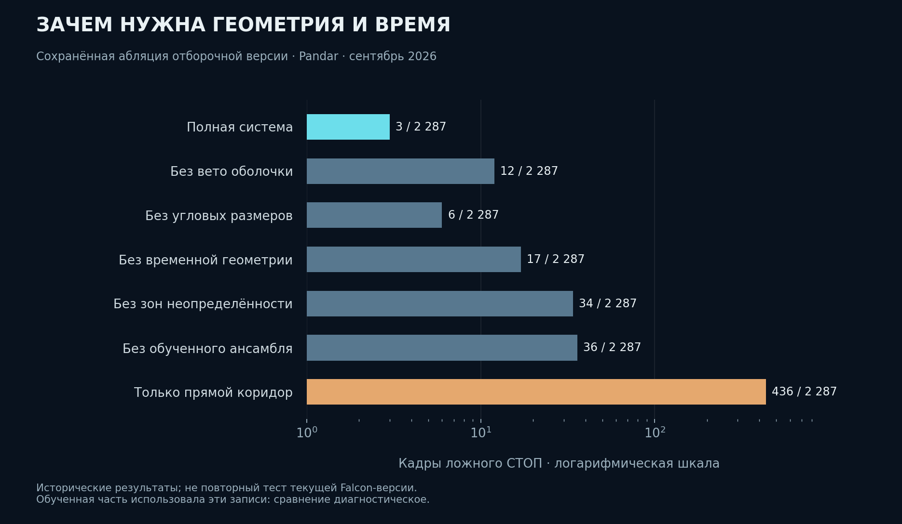

Облако → единая система осей
Поля PointCloud2 по именам. Определение оси вперёд, калибровка наклона и крена, оценка угловой плотности сенсора.
Лидарная система обнаружения препятствий в габарите поезда. Реальные облака точек, геометрия пути и проверяемые решения.
Система восстанавливает путь и его габарит, отделяет инфраструктуру от препятствий и накапливает слабые дальние отражения во времени.
Исследовать запись ↓Версия отборочного этапа ↗¹ Сопоставление с автоматически извлечённой траекторией, не независимой ручной разметкой. ² Включает экстраполяцию за пределы измеренной геометрии; не означает подтверждённый свободный путь.
Вращайте сцену мышью, приближайте колесом и перемещайтесь по времени. Это воспроизведение заранее вычисленного вывода, не запуск детектора в браузере.
Нажмите на карточку, затем ▶ Смотреть. Показаны фрагменты сохранённого вывода; число кадров и длительность на карточках относятся к полным записям.
Для браузера точки прорежены с сохранением дальних возвратов; решения рассчитаны на полном облаке. Рамки с минимумом отражений могут быть очень малы — режим «Рядом с целью» помогает их рассмотреть.
Гибридная система с двумя специалистами для объектов у пола и подвешенных объектов. Вес LightGBM и CatBoost в каждом специалисте — ½ / ½ в пространстве логитов.
Поля PointCloud2 по именам. Определение оси вперёд, калибровка наклона и крена, оценка угловой плотности сенсора.
Парные рельсовые гребни, непрерывный поиск пути, поперечный шаблон тоннеля, Gauss–Newton и оценка неопределённости. Ключевое ядро перенесено на C++.
Габарит, оболочка, опора и угловые размеры. Два ансамбля LightGBM + CatBoost, сглаживание уверенности. Отдельный признак объёмного рассеяния.
Компенсация движения, подтверждение M из N кадров, накопление редких дальних возвратов и удержание подтверждённого объекта при короткой потере точек.
Контролируемые инъекции в реальные кадры Falcon: лучевая сетка, отражаемость, окклюзия и модель аэрозоля. Это синтетическая проверка, её результаты не заменяют независимый реальный тест.
Выберите столбец или дистанцию. Цвет показывает долю кадров с детекцией. Для пыли целевой результат — отсутствие ложных препятствий и СТОП.
Например, 96% — 48 из 50 кадров с препятствием, 74% — 37 со СТОП. «Возвраты» — точки от синтетического объекта. 30 кадров прогрева + 50 кадров с инъекцией на испытание. Доля включает время подтверждения. Один фиксированный seed на дистанцию: это диагностическая лестница, не доверительный интервал качества.
Открыть исходный JSON ↗Метрики на этой записи помогают находить ошибки. Полные precision/recall требуют независимой разметки всех препятствий и свободных интервалов.
| Критерий | Результат | Что именно проверено |
|---|---|---|
| Загрузка протокола измерений… | ||
Метрики и происхождение данных ↗ · Подробный протокол, ограничения и передача проекта ↗
Текущий этап и отборочная работа показаны раздельно. Все сравнения имеют исходный JSON и явно указанный набор кадров.



2 287 отрицательных кадров. Обученная часть использовала эти записи; сравнение диагностическое и оптимистичное. Это не новый Falcon-тест.
Протоколы, текущая абляция и восстановленные изображения Claude ↗
Платформа → стрелка → тоннель. Фиксированная камера по ходу поезда, цветное облако точек, габарит пути и рамки препятствий с дистанциями. Синтетические записи организаторов; сохранённый вывод, ускорение 2×. Облака для показа сохранены с шагом 2,5 с исходной записи.
Образ собирается и проверяется в GitHub Actions. Codespaces предоставляет облачный рабочий стол через noVNC: место для Docker и WSL на вашем ПК не требуется.
В Codespaces откройте порт 6080 → рабочий стол. Пароль демонстрационного рабочего стола: tunnelguard. Порт оставляйте приватным. Для ПК с Docker есть отдельный Compose: браузерный RViz без внешнего X-сервера. Использование облачных ресурсов зависит от квоты вашего GitHub.
В терминале проигрывателя: пробел — пауза, ↑ / ↓ — скорость, → — следующий кадр при паузе, Ctrl+C — остановить воспроизведение.
Ctrl+C останавливает проигрыватель. Выполните tg play с другим бэгом. Контейнер и RViz продолжают работать; перед новым бэгом состояние детектора сбрасывается.
Проверить фактические поля и систему осей драйвера. Нативный Falcon использует X вверх, Y вправо, Z вперёд; ROS-драйвер может уже выполнить преобразование. Доступны auto и явные режимы x / -x / y / -y / z / -z / falcon.
# В терминале облачного рабочего стола tg start tg bags tg play falcon_test 1.0 # После Ctrl+C: другой бэг, та же сессия tg play другой_бэг 0.5 # Пауза с первого кадра tg play falcon_test 1.0 --start-pausedПодробный запуск на Windows / Linux / macOS с GUI ↗